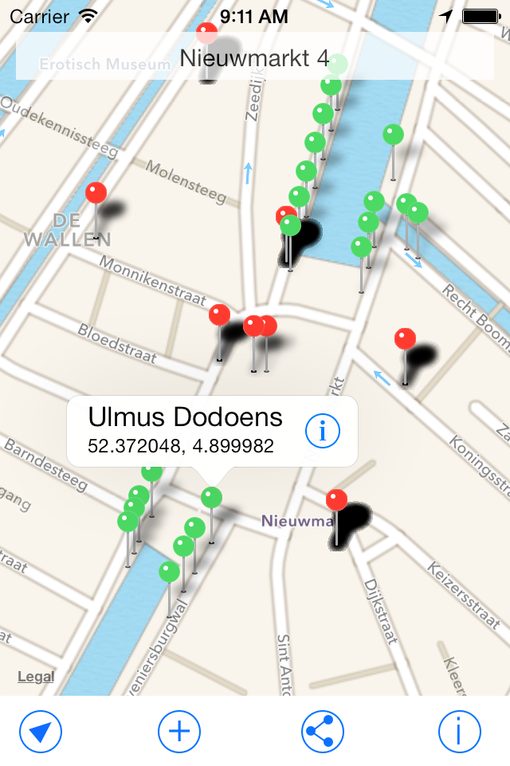

CitySDK API
Bert Spaan - Waag Society
Waag Society
CitySDK
- Collect
- Describe
- Link
- Distribute
Expose data via one unified REST API
CitySDK
Read/Write City
Read and write data to objects in city
Concept
nodes, data, layers

Concept
ptstops, ptlines
API site
Developer's site
CMS
Add layers, add data
HTTP API
GET/PUT requests to modify nodes and data
Documentation: http://devcitysdk.ibb.gov.tr/
Ruby gem
gem install citysdkWrite data to existing node
require 'citysdk'
email = ARGV[1]
password = ARGV[2]
api = CitySDK::API.new("apicitysdk.ibb.gov.tr")
api.authenticate(email, passw)
data = {
data: {
:type => "43",
:date => "2013-11-01",
:from => "gtfs.stop.istb.91",
:to => "gtfs.stop.istb.87"
}
}
@api.put("gtfs.line.2.t1-0/hackathonist.team1.construction", data)
Create new node(s)
Use bulk API: http://devcitysdk.ibb.gov.tr/write
Sample applications
Now
JavaScript application showing nearest available public transport
Buildings map
Buildings by year of construction - dev.citysdk.waag.org/buildings
Open Data Globe
dev.citysdk.waag.org/visualisationCitymarker
Citymarker
- Uses CitySDK API - read and write data
- PHP and iOS code
- https://github.com/2coolmonkeys/citymarker
Traze
Traze
iOS library for CitySDK
Accounts
15 teams
nr = 1
email = "team#{nr}@hackathonist.com"
password = "Team#{nr}.hackathonist"
# team1@hackathonist.com
# Team1.hackathonist
CitySDK Istanbul
API endpoint - apicitysdk.ibb.gov.tr